一、设计模式（一）
1.面向对象原则
- 1）单一职责
- 2）开放封闭
- 3）LSP里氏替换
- php有继承链
- A->B->C->D，A可以使用D的方法，D也可以调用A的方法
- 4）DIP依赖倒转：子类和父类可以互换
- 5）ISP接口隔离：自己干自己的事情
- 6）合成/聚合复用：少用继承，多用接口类去搞定
- 7）PLK迪米特法则最少知识：一个对象对其他对象尽可能少的了解，降低依赖性
2.设计模式的目的
- 1）代码复用
- 2）增加可维护性
3.PHP的设计模式
- 1）设计模式为了弥补语言的不足，每个语言不一样，有些设计模式在PHP中不需要实现（不到23种）
- 2）创建型模式
- single，单例模式
- Abstract factory，抽象工厂
- 建造者模式
- factory，工厂
- 原型模式
- 3）结构型模式
- 适配器模式
- 桥接模式
- 装饰模式
- 组合模式
- 外观模式
- 享元模式
- 代理模式
- 4）行为型模式
- 模板方法模式
- 命令模式
- 迭代器模式
- 观察者模式
- 中介者模式
- 策略模式
4.Laravel中的设计模式
- 1）Facade门面模式
- 2）IoC和DI，服务容器和依赖注入
- 3）Pipeline，管道
5.Facade门面模式
- 1）基础知识：魔术方法、静态延迟绑定
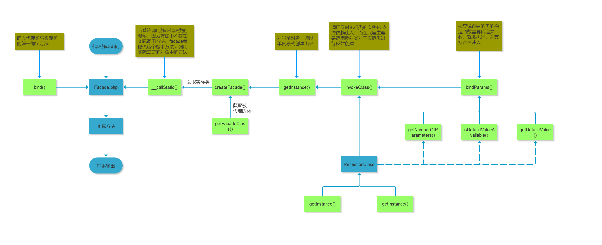
- 2）目的：为了实现代码的解耦
- 3）解决：每使用一个类都要use命名空间，然后实例化类
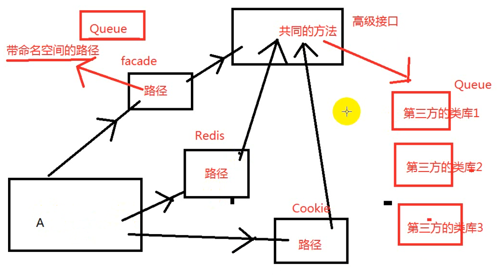
- 4）Support/Facades中各类中的getFacadeAccessor方法，返回的是config/app.php中的aliases里面的别名，所以也可以使用完整路径
- Support/Facades/redis.php

- config/app.php中的aliases

- 5）*继承的Support/Facades/Facade类中，核心的__callStatic方法

6）使用门面：更加优雅，其实与使用app(‘redis’)一样的，Redis::get()==app(‘redis’)->get()
7）官方话术：外部与一个子系统的通信，必须通过一个统一的外观对象进行，为子系统的一组接口，提供一个一致的界面

8）就是将实例化代码集中在一个类中，如果不使用 __callStatic魔术方法，将导致这个文件非常臃肿，参考：Laravel/1facade/
6.控制反转、依赖注入
- 1）基础知识：AOP
- 2）IoC容器

- 3）依赖倒置

- 4）角色构成：IoC/DI容器，某个对象，对象的外部资源

- 5）AOP简单理解：抽取公共部分

- 6）laravel控制器$request核心注入：call_user_func_array()

- 7）*laravel容器核心，反射，Container.php/build方法

- 8）Laravel/2ioc
二、设计模式（二）
1.简单工厂模式、工厂模式
- 1）简单工厂模式：由一个工厂对象来决定创建哪一种产品类的实例
- 优点：明确了业务代码和工厂类的职责和权限
- 缺点：大量的实例的创建逻辑，违反了高内聚责任分配原则，每次新增加一个类型，需要修改工厂类

- 2）Laravel/3easyfactory
2.装饰器模式
- 1）装饰器：不改变原类文件和使用继承的情况下，动态的扩展一个对象的功能


3.观察者模式
- 1）观察者：当主体对象状态发生变化的时候，通知所有的观察者对象，让观察者自动更新自己
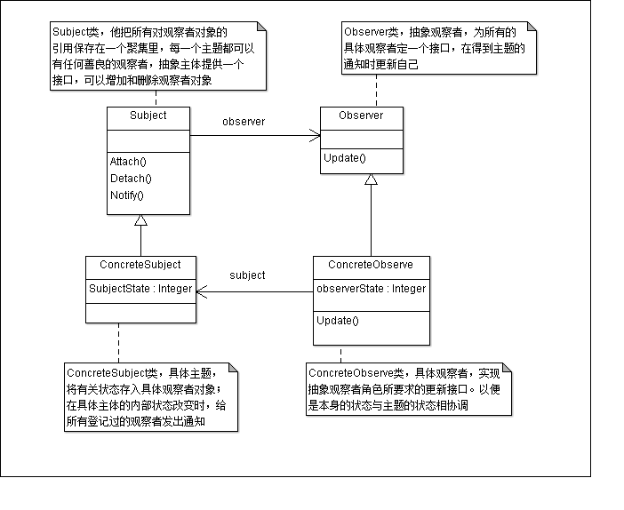

- 2）目的：基于类的单一性设计原则，观察者模式主要是划定模块之间的界限，提高代码的可维护性和重用性
- 3）使用场景：执行一系列业务动作
- 4）Laravel/5observe

4.适配器模式
- 1）Laravel中路由
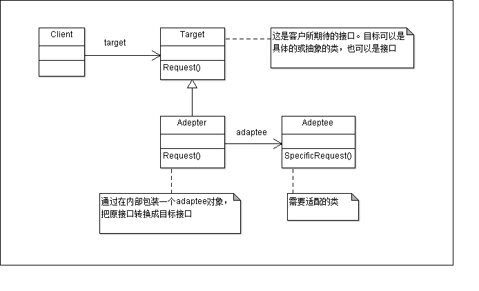
5.迭代器模式
- 1）迭代器（游标）：结合容器（container）使用
- 迭代器角色（Iterator）：负责定义访问和遍历元素的接口
- 具体迭代器角色（ConcreteIterator）：具体实现迭代器，记录遍历的当前位置
- 容器（container）：负责创建具体迭代器角色接口
- 具体容器角色（concrete container）：具体实现
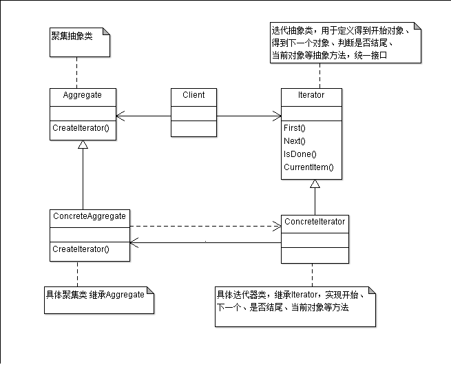
- 2）使用场景：为不同的遍历方式实现统一的接口
三、设计模式（三）
1.原型模式
- 1）类图
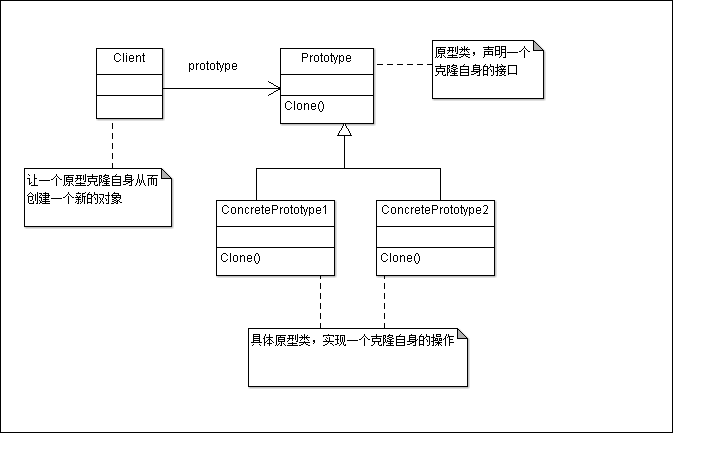
- 2）js中的原型：在原本的JS对象基础上增加方法
- 3）原型模式：从一个对象创建另外一个可定制的对象，不需要知道创建的细节（请求原型来创建对象）（申明一个自身克隆的接口）
- 4）php中对象是一个引用类型，想要生成新的对象，要用__clone()方法，clone $obj时会执行__clone()
- 5）Laravel中大量使用：
- vendor/symfony/http-foundation/Request.php
- vendor/symfony/http-kernel/Kernel.php
- vendor/laravel/framework/src/Illuminate/Cache/Repository.php
- 6）优点：
- 创建新对象不用去再construct，提高性能
- 逃避构造方法的约束
- 7）缺点：
- 当引用不支持串行化的间接对象（反序列化类的时候必须包含源类）
- 必须实现__clone()
- 8）使用场景
- 类初始化需求消耗大量资源
- 一个对象要被多个地方使用并进行修改
- 结合工厂模式使用
2.命令链模式
- 1）类图
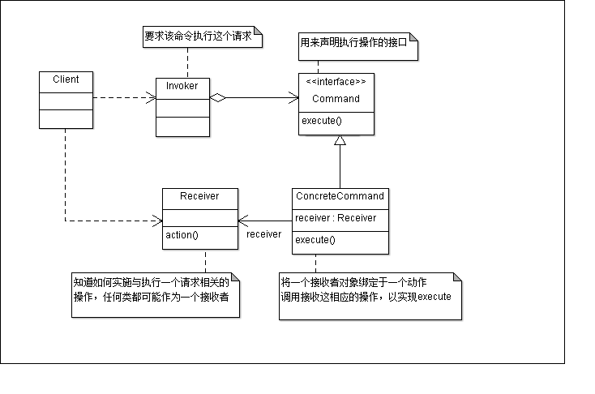
- 2）两步
- 关系的绑定
- 命令执行
- 3）命令模式：如何将“行为请求者”和“行为实现者”解耦，将一组行为抽象为对象，实现二者的松耦合
- 4）特点：行为请求者不需要知道行为实现者具体的实现时间、执行的情况
- 5）使用场景
- 进行队列请求的时候
- 需要支持命令的撤销和恢复操作
- 6）四个步骤
- client创建一个ConcreteCommand对象并指定他的Receiver对象
- Invoker对象存储该ConcreteCommand对象
- 通过Command对象的Execute来提交请求，该请求是可撤销的
- ConcreteCommand对象调用注入的Receiver的action方法完成该请求的执行
3.策略模式
- 1）策略模式：对一系列算法的定义，将多个算法单一的封装起来，让它们可以相互替换
- 2）类图
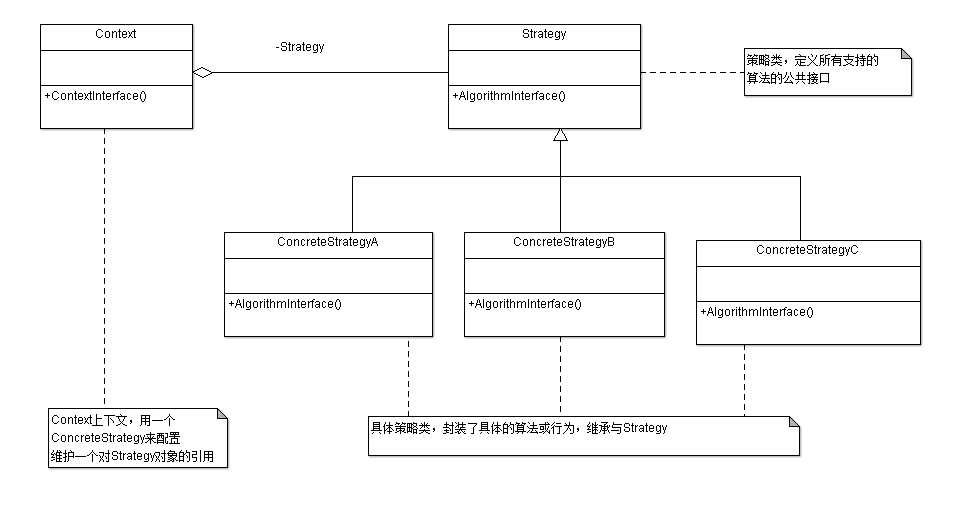
- 3）两步
- 实例化上下文对象（哪个算法）
- 实现具体代码的执行
- 4）本质上就是一个判断
- 5）使用场景：结合工厂模式使用
- 6）角色
- 角色1：抽象策略角色：抽象类
- 角色2：具体策略角色：包装了相关的算法与行为
- 角色3：环境角色：策略类的引用
4.责任链（管道）模式
- 1）Linux的管道：最基本的IPC机制
- 2）Fork：父进程创建出一个和父进程相同的子进程，fd[0]读，fd[1]写，父子进程通过pipe通信
- 3）类图
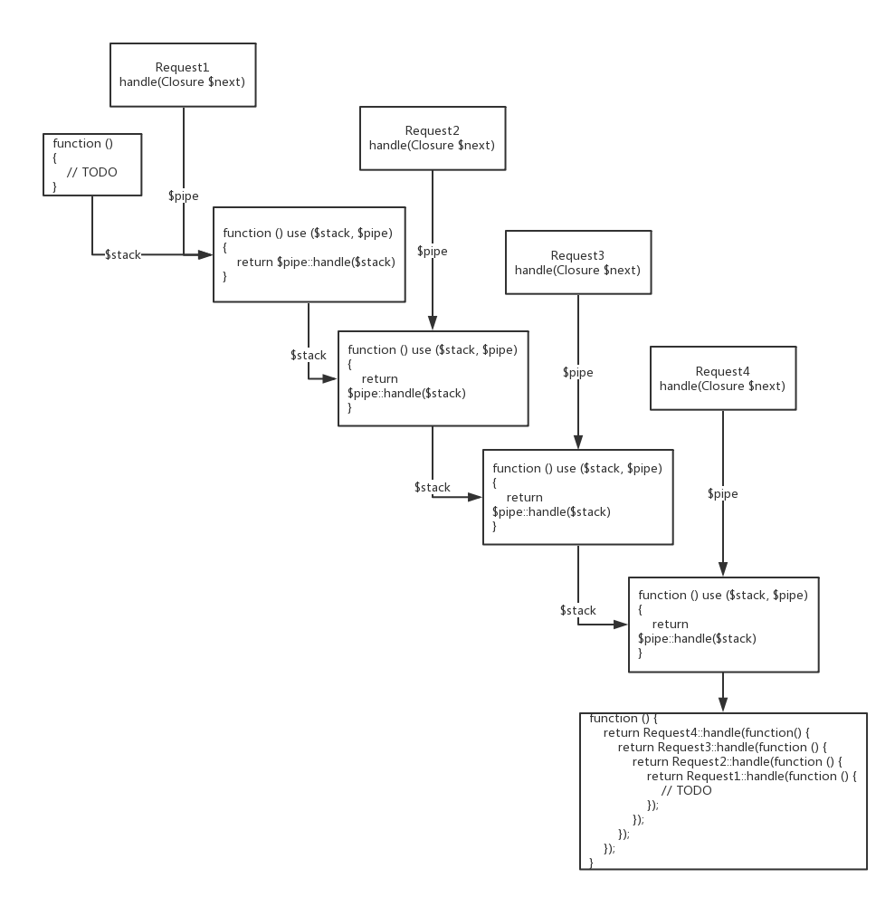
- 4）概念：将数据传递给一个任务队列，由任务队列按照次序对数据进行加工处理（HTTP请求的中间件）
- 5）贯穿Laravel路
- pipeline类：send载入请求数据、through加载中间件、then向管道发起请求
- 6）优点
- 将复杂的处理流程分解为独立的子任务，子任务之间相互不会受到影响
- 针对不同的http请求，采用不同的子任务组合来处理
- 在复杂的进程中CUD子任务非常轻松，对现有的进程没有任何影响
- 7）缺点：增加了代码的复杂性，不利于理解整个流程
四、Laravel基础（一）
1.代码加载原理
- 目录结构基于PSR规范
- 配置composer.json文件的加载规则（PSR-1、PSR-4、别名的加载）
- composer dump-autoload：刷新composer缓存文件
2.助手文件加载（直接加载文件配置）

3.根目录文件
- 1）.env，环境变量，主配置文件，php从getenv()中获取全局环境变量，.env文件相当于添加到环境变量中，参考phpinfo()
- 2）artisan，命令行工具（辅助开发）
- 3）package.json、webpack.mix.js，前端组件工具
4.目录结构
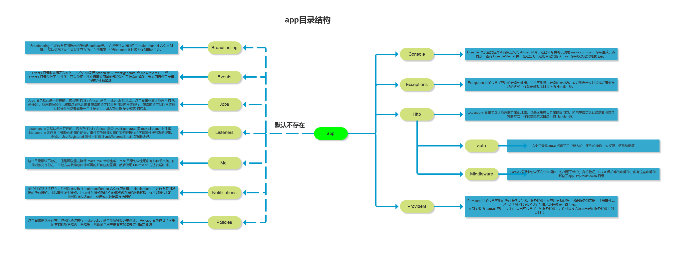
- 1）App，应用程序的主要开发目录，默认有的文件夹不要修改名字
- console、http、provides，Laravel核心的api
- Kernel，核心文件，重要
- http，路由请求相关文件，控制器，中间件
- Provides，服务提供者
- 2）Routes
- web.php，默认路由（渲染模板）
- api.php，默认Api路由（限速、token认证、直接返数据）
- console.php，控制台命令的闭包，和命令行交互
- channls.php，事件broadcast，用来注册事件广播
- 3）bootstrap：启动程序，引导程序，框架的引导文件
- app.php，引导程序
- Cache/，缓存生成
- 4）config，配置文件
- 5）database，数据迁移目录、数据填充
- php artisan make:migration create_表名_table
- 低版本的mysql要加入

- 6）public，公共入口文件
- 伪静态文件
- 静态资源文件
- 网站信息文件：爬虫、ico等
- index.php，框架入口
- 7）resources，模块资源文件（blade模板引擎）
- 8）storage，编译以后的文件缓存及日志文件等，缓存编译文件目录
- 9）tests，单元测试
- 10）Vendor，第三方组件，composer
5.路由和控制器的加载
- 1）定义web.php（route::resourcetype）
- Resourcetype:get、post、put、patch、delete等
- 2）路由分组RouteGroup(['prefix'=>,’namespace’=>,’middleware’=>,’domain’=>……], function(){
- })
- prefix：访问的路径，区分大小写
- namespace：加载控制器文件的命名空间
- 3）::class，获取当前类文件的“绝对路径”带命名空间的绝对路径
- 4）Laravel中，访问的地址和解析的文件路径没有任何关系
五、Laravel基础（二）
1.路由
- 1）没有路由就没有框架
- 2）路由别名、自定义路由、参数类型限定、多模式匹配
- Route::get(‘/test’,'IndexController@Index')->name(‘index.index’)；
- 模板中：route(‘index.index’, [‘id' => 10]);
- Route::get(‘/params/{id}’,’IndexController@params')->where([‘id’=>’[0-9]+’]);
- Route::match([‘get’, ‘post’], ‘/test’, ‘IndexController@Index’)
- Route::any(’/test’, ‘IndexController@Index')
2.控制器
- 1）在路由表当中可以指定访问哪一个指定的控制器而不是一个闭包
- 控制器放在<project>/app/Http/Controllers目录下
- 文件名：Xx控制器Controller.php
- 注意：单词首字母大写（大驼峰）
- 可以利用artisan命令创建
- 2）artisan命令
- php artisan make:controller TestController
- 3）修改控制器目录：Providers中的RouteServiceProvider中，如添加mapAdminRoutes()方法，然后加入到map()方法中去
- 4）资源路由：
- Route::resource(‘rest’, ‘RestController’);
- 指定模型的Reseource控制器：php artisan make:controller RestController —resource —model=User
3.路由模型绑定
- 1）RouteServiceProvider执行路由模型的绑定
- 2）boot()中，$route->model(‘python|路由名字’, Conference::class|哪一个模型);
- 3）显式、隐式绑定
- Route::get(‘’, function($id){Conference::method($id)})
- Route::get(‘’, function(){return view()->with(’name’, $conference);})
- 4）无控制器下返回数据用
4.控制器与视图
- 1）要在控制器中指定渲染某个视图，则需要使用到view方法，view方法接收两个参数，第一个参数是视图的路径名称，第二个参数是与视图绑定的数据
- 2）视图（view），将视图作为一个独立的组件实现了控制器的解耦，在代码的任何位置都可以使用（view）方法加载一个视图
- 3）指令说明、定界符
- 自定义标签前缀 @
- 为所有的控件结构、继承和任何想要添加的自宝义功能的使用指令
- 定界符：{{ $a }}==echo htmlentities($a)，转义输出
- 4）控制结构
- 5）* view中变量从controller中的数组导入到符号表（变成变量），Illuminate\View\Engines\PHPEngine中，evaluatePath方法内：extract
- extract($__data, EXTR_SKIP);
- EXTR_SKIP，如果有冲突，不覆盖已有的变量
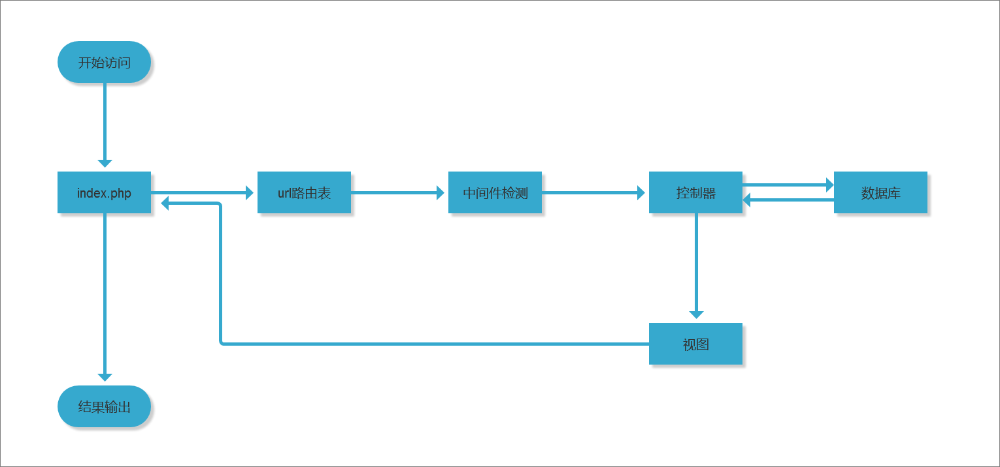
六、Laravel基础（三）
1.控制器中系统组件的使用：$request、$response对象
- 1）$request：贯穿整个laravel路由，传递信息，依赖注入进控制器
- 表单输入（facade快速引入）— \Support\facades\下面，Request::input()，Input::get()
- 自动实现表单过滤
- csrf功能
- 相同字段覆盖
- Input::get()，获取所有的请求参数，包括get、post、put等
- 2）Facades是为了方便修改，所以控制器中xjty的是\Http\Request，内核代码相对更稳定
2.控制器注入
- 1）index(Request $request)
- 2）csrf使用中间件过滤
3.模板foreach中的循环变量，$loop，包含很多迭代循环需要的属性
- index，循环索引，key值，0开始
- iteration，从1开始
- remaining，还有多少项
- count，总循环数
- first，是否第一个
- last，是否最后一个
- depth，循环层数
- parent，上层循环的$loop

4.or，在不确定某个变量是否有值的时候，可以设默认值，{{ $username or ‘没内容哦' }}（一般在语言包处理）
5.forelse，循环数组不存在，走empty里面的内容

6.模板继承
- 1）模板继承和区块实现高度的代码复用和清晰的视图结构
- 2）layout模板

- 3）定义区块：父模板中@yield(‘xxx’)
- 使用区块：子模板中@section(‘xxx’)
- @section+@show一般用来做js的加载
- 在同一个模板中定义section的位置，使用show，在子模板中定义模板的内容，使用endsection
- stop是endsection的别名
- 如果不使用@parent，完全覆盖父文件的内容
- 4）@each，可以对视图部分进行循环
- @each('视图名称’, ‘遍历的数组’, ‘视图的变量名称（遍历数组中的值）’, ‘可选：空视图的名字')
7.视图和服务注入
- 1）用视图composer绑定数据
- 2）全局共享变量（RouteServiceProvider）中，boot()内：view()->share(’name’, $data);
- 3）所有视图中，都可以拿到$name变量
- 4）Blade服务注入：通过路由定义构造函数，将服务注入视图，在控制器中没有编写的特殊代码需要在页面中使用，比如导航，这样就需要这个导航类在每个控制器中去调用了，直接在页面注入

- 5）视图中直接注入服务：@inject(’XXXX’, ‘App\Service\XXXX’)
8.自定义blade指令
- 1）指令来自于blade模板引擎，文件位置：View\Compilers\BladeCompiler.php
- 2）directive方法，$alias别名，$handler闭包
- 3）全局自定义：App\Providers\AppServiceProvider.php中的boot()方法
- Blade::directive(’name’, function(){ return 替换完的代码;});，模板中：@name

- 4）带参数的自定义标签，从$expression中拿到
- @name(‘XXX’)
- Blade::directive(’name’, function($expression){ return 替换完的代码;});
七、Eloquent使用、模型操作使用
1.数据库快速操作CURD
2.数据库监听DB::listen()
- 1）在AppServiceProvider的boot()中全局监听

- 2）只要在执行SQL代码前，都可以去监听，在控制器或者其他地方
3.DB的Facade是DatabaseManager.php，*默认服务容器列表：\Illuminate\Foundation\Application.php中的registerCoreContainerAliases()方法内
4.Illuminate\Database\Query重点关注
5.Eloquent ORM
- 1）定义：实现ActiveRecord模式与数据库进行交互
- 2）生成命令：php artisan make:model Model\Users
- 3）继承自Illuminate\Database\Eloquent\Model.php，可以重写父类的内容，实现指定数据表、主键键名、connection属性、主键类型等
- 4）主要用于对象持久化，可直接在代码执行过程中操作对象来进行数据库操作
- 5）软删除：
- 数据库字段添加delete_at（timestamp）
- 模型内添加use Soft·Deletes
- 强制查询软删除数据：Model::withTrashed()->find(1)
- 恢复数据：$model->restore()->find(1)
八、Eloquent-关联模型、多对多模型
1.批量赋值：建立一个模型数组，通过$fillable和$guarded来设置允许和允许批量赋值的字段，防止用户随意的修改模型的属性
2.关联操作
- 1）关联类型：
- 1对1：主表中定义从表的模型方法中调用hasOne()，方法名与从表类名一致；从表中定义belongsTo()
- 1对多：hasMany()；返回的是一个集合，不是模型的实例，可以进行任何类似Eloquent集合的操作（自定义方法）；
- 多对多：belongsToMany()；attach()、detach()；
- 远程的一对多：一种非常方便的、建立关系的方法；hasManyThrough()；在主表的模型中定义远程对象（通过中间表）
- 预载入：预处理语句；默认采用“惰性加载”，第一次载入模型实例，是不会载入关联模型，只有在单独调用的时候，才会被加载；
- 多态多对多关联
- 2）*集合：Collection，\Illuminate\Support\Collection.php
- 类似数组
- 有更多的操作方法
- helpers.php中的connect方法
- reject()、map()、filter()、max()、whereIn()、flatten()、filp()等60个方法
- 方便的包装代替array_map()、array_reduce()等原生方法
九、Eloquent事件，中间件原理
1.Eloquent事件
- 1）在模型操作的生命周期的不同时间点，使用下面的方法绑定事件：creating、created、updating、saving、saved、deleting、deleted、restoring、restored
- 2）绑定监听器：
- 直接在App\Providers\EventServiceProvider

- 事件生成：php artisan event:generate
- 3）监听优点：局部更新缓存、触发日志等功能
2.中间件与服务
- 1）中间件使用
- HTTP中间件过滤进入APP应用的HTTP请求
- 系统自带的中间件（App\Http\Middleware）
- 2）中间件的创建和使用
- php artisan make:middleware xxxx
- 3）中间件范围：Kernel.php中
- $meddleware全局，先走这里的
- $middlewareGroup路由中间件组，其次走这里的
- $routeMiddleware路由中间件，指定的路由会走对应的中间件
十.Laravel中间件原理解析
1.终端中间件
- 1）定义中间件为可终止的，先发送到用户，然后再存储数据
2.Laravel的运行流程

- 1）array_reduce把所有要通过的中间件（$this->pipes），使用回调函数（$this->pipes不为空）
- 2）核心理解Illuminate\Pipeline\Pipeline.php中的carry()方法
十一、Laravel框架（一）
1.服务源码分析
- 1）服务提供者注册和引导启动（处理HTTP请求阶段才开始）

2.webservice

- 1）原理：Laravel的服务容器及依赖注入容器是整个框架所有功能的核心，DI依赖注入和IoC控制反转
- 2）定义
- config\app.php中的providers数组中
- php artisan make:provider xxxxxService
- boot()调用服务之前自动执行的代码
- register()让服务和实际的功能代码关联起来（闭包），app()助手函数、bind()方法、singleton()方法

- 3）使用
- app(‘xxx’);
- $this->app[‘xxx’];
十二、Laravel框架（二）Auth
1.登录用户Auth组件
- 1）php artisan make:auth
- 2）自带控制器：注册、登录、会话、重置密码
- 3）Illuminat\Auth
- 4）路由：Illuminat\Routing/Router.php，auth()方法
2.加密方式
- 1）注册默认用helper.php中的bcrypt方法，使用的是Illuminate\Hashing\BcryptHasher中的make()方法：password_hash()
- 2）Encrypter类，使用的OpenSSL、AES加密
3.中间件三个Guard：request、session、token
- Auth::viaRequest 添加一个自定义的RequestGuard
- SessionGuard WEB认证默认的guard Illuminate\Auth\SessionGuard
- TokenGuard Illuminate\Auth\TokenGuard 无状态的API认证
- Guard 用来认证用户是否成功
- UserProvider 用来提供认证模型的来源
十三、Laravel框架（三）队列
1.使用场景
- 应用解耦
- 流量削峰
- 提高系统稳定性、响应速度
- 耗时久的应用
- 调用外部API的应用需要保障送达率的
十四、Laravel框架（四）